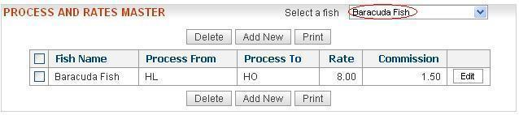

| A process or preprocess will convert from one material type to another. | ||
| List of rate and commission for various Processe's | ||
| Add Process Entry | ||
| Edit Process Entry | ||
| Delete Process Entry | ||
| List of rate and commission for various Processe's | ||
| 1) By default you get the entire list of the rate and commission entries for the various processe's as shown in the figure. | ||
| 2) You can view the rate and commission entries for the various processe's of the selected fish(First select a fish from the drop-down list as shown in the figure.Then you will get the rate and commission entries for various processe's of the selected fish). | ||
|  | ||
| Add Process Entry | ||
| 1) Click the “AddNew” button.Then you get the following screen: | ||
| 2) Select the fish from the drop-down list. | ||
| 3) Select the process code from the "Process From" drop-down list. | ||
| 4) Select the process code from the "Process To" drop-down list. | ||
| Note:If there is no process code from the "Process From" drop-down list and "Process To" drop-down list, you can add process codes by using Process Code Master functionality. | ||
| 5)Update the monthwise change of processing yield.By default the monthwise yield is 100 .Eg: If you update the monthwise yield from 100 to 90 for June and November, the screen will look like this : | ||
| 6) Enter the time in days(optional). | ||
| 7) Enter the rate. | ||
| 8) Enter the commission. | ||
| 8) Select the criteria from the drop-down list. If you select "From" for the criteria, the rate will be calculated by using the quantity for "process code" selected in the "Process From" drop-down list. If you select "To" for the the criteria, the rate will be calculated by using the quantity for "process code" selected in the "Process To" drop-down list. | 9) Click the Add button.You will be prompted for a confirmation.Click on the Ok button.The newly added entry will be visible in the Process list . | |
| Edit Process Entry | ||
| 1)Click the "Edit" button .Then you get the following screen: | ||
| 2) You can edit the fish name,Process From,Process To,monthwise yield,time,rate,commission and/or criteria(refer to the "Add Process Entry" section). | ||
| 3) Click on the "Save Changes" button.You will be prompted for confirmation.Click on the Ok button.The changes will be visible in the Process list . | ||
| Delete Process Entry | ||
| 1) You can select more than one entries by selecting the checkboxes against each entry. | ||
| 2) Click the Delete button.You will be prompted for confirmation.(as shown below): | ||
| Click on the Ok buton.The selected entry(entries) will be removed from the Process list . | ||